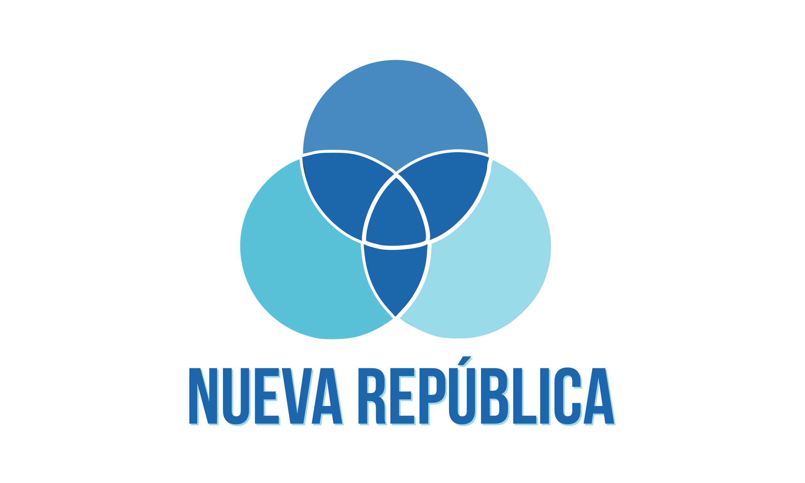

| Candidatos presidenciales | |
|---|---|
|
José María Figueres |

Rodrigo Chaves |
| Candidatos presidenciales | |
|---|---|
|
José María Figueres |
Rodrigo Chaves |
| Bandera | Candidato | Primera | Segunda |
|---|---|---|---|
| José María Figueres |
17% |
17.01% |
|
|  | Fabricio Alvarado |
9% |
10.27% |
| Rodrigo Chaves |
5% |
8.19% |
|
| Eli Feinzaig |
4% |
5.68% |